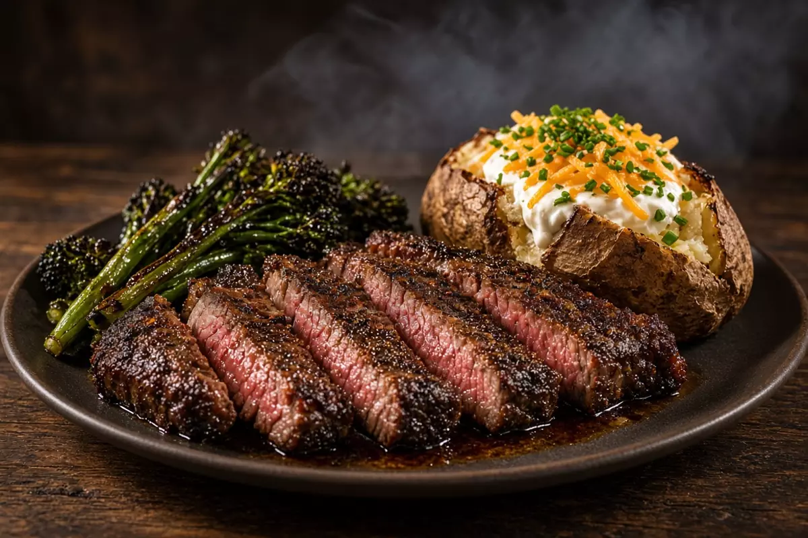

Pellet-Grill Reverse-Sear Top Sirloin
Top sirloin roast smoked at 225 F on the pellet grill, then seared. Salt, pepper, garlic, and smoked paprika only. Charred broccolini and loaded baked potatoes.

4 servings
By
Yield: 4 servings
Prep:
Cook:
Total:
Ingredients
- 1 top sirloin roast, about 2 1/2 pounds
- 2 teaspoons kosher salt
- 1 teaspoon black pepper
- 1 teaspoon garlic powder
- 1 teaspoon smoked paprika
- 1 tablespoon avocado oil
- 4 medium russet potatoes, scrubbed
- 1 tablespoon avocado oil, for the potatoes
- 2 tablespoons unsalted butter
- 1/2 cup sour cream
- 1/2 cup shredded cheddar
- 2 tablespoons chopped chives
- 1 pound broccolini, trimmed
- 1 tablespoon avocado oil, for the broccolini
- 1/2 teaspoon kosher salt, for the broccolini
- 1/4 teaspoon black pepper, for the broccolini
- 2 cloves garlic, minced
Instructions
- Heat the pellet grill to 225 F. Pat the top sirloin dry. Rub with 1 tablespoon avocado oil, then salt, black pepper, garlic powder, and smoked paprika. No coffee.
- Rub the potatoes with oil and a pinch of salt. Set them on the grill away from the hottest spot, or in a 425 F oven. Cook 55 to 70 minutes until a fork slides in.
- Place the roast on the grill. Smoke until the center reads 120 F, about 35 to 60 minutes depending on thickness. Pull it earlier if it is a flat roast under 2 inches.
- Toss broccolini with oil, 1/2 teaspoon salt, pepper, and garlic. During the last 10 minutes, char it in a hot cast-iron skillet or over direct heat, 4 to 6 minutes, turning once.
- Sear the roast in a ripping-hot cast-iron skillet or over high direct heat, 1 to 2 minutes per side, until the center is 130 F for medium-rare. Rest 10 minutes.
- Split the potatoes, fluff the centers, and top with butter, salt, cheddar, sour cream, and chives. Slice the sirloin against the grain and serve with the broccolini.